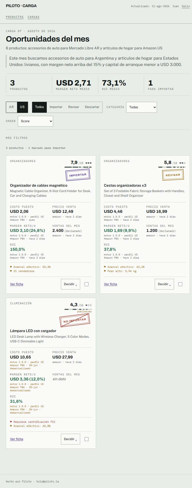
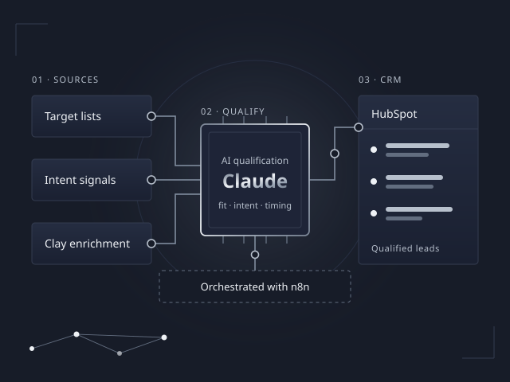
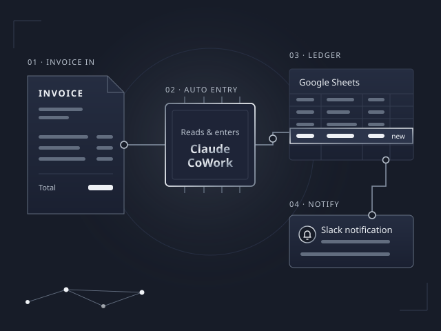
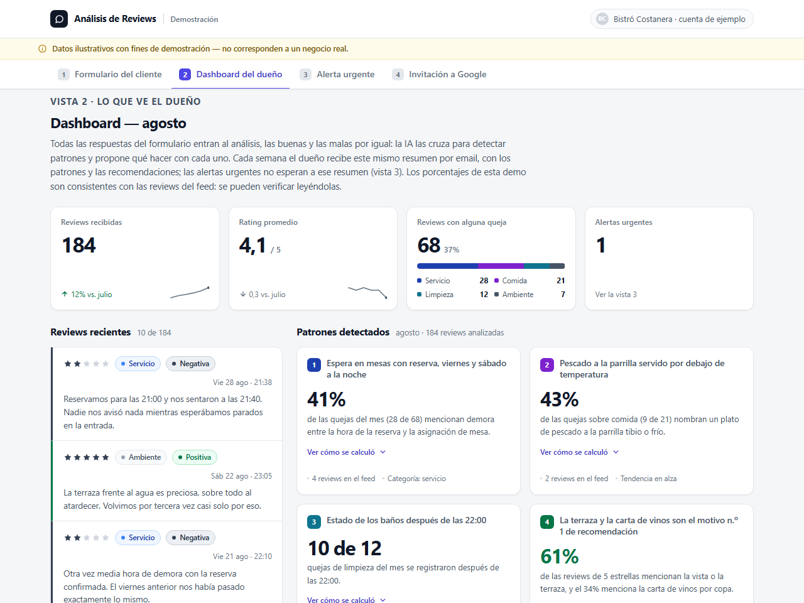
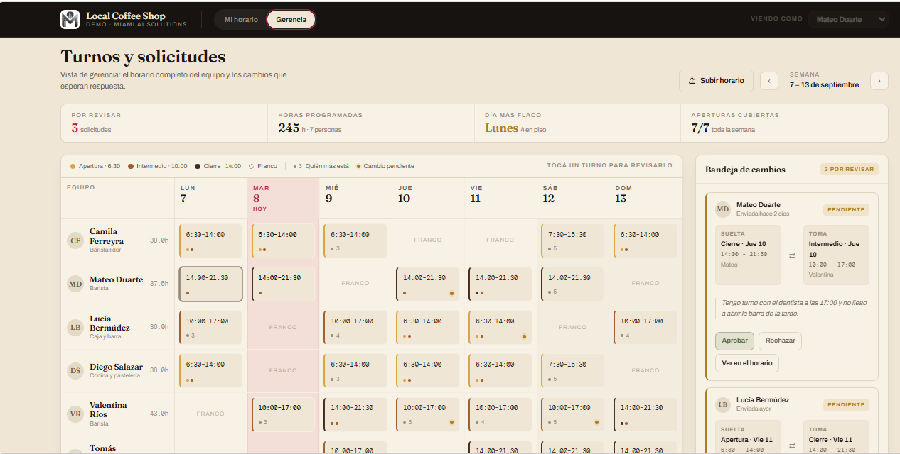

Carga
A full-stack import-analytics platform, built end-to-end.
- Stack
- Next.js, TypeScript, Supabase, Claude API
- Our role
- Designed and built end-to-end — interface, database, and AI integration.
A look at systems we have designed, built, and shipped for real use. No fabricated case studies — only work that actually ran in production.

A full-stack import-analytics platform, built end-to-end.

An AI-driven sales development system that generated approximately 50 qualified B2B leads per week.

An automated accounting workflow built with Claude CoWork, Google Sheets, and Slack.
Ideas we’ve mocked up as sales material for prospective clients — design concepts, not yet built as functional systems, and not tied to any signed client.

A concept for restaurants. After each visit, every guest gets the same short feedback form — never filtered by whether their experience was good or bad. AI reads all of it, positive and negative, to find patterns (say, wait-time complaints clustering on Friday nights), and the owner gets a periodic report with actionable recommendations.

A staff-scheduling concept for a local coffee shop. The week is a grid of shifts coloured by time of day — opening, mid and closing, from light to dark — and each shift shows who else is working it.
Tell us about the process you want to automate or the system you want built.